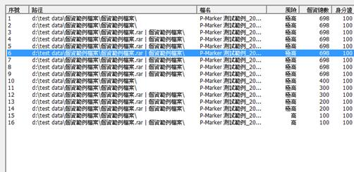
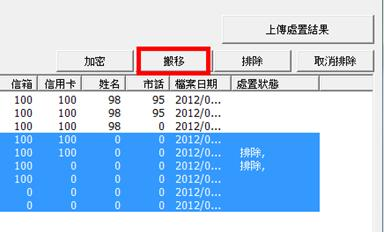
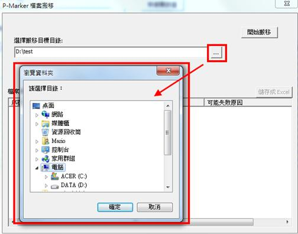
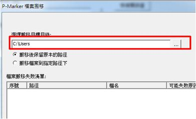
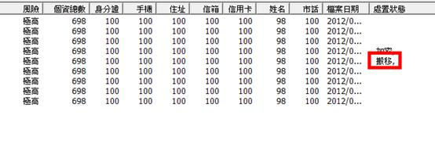

使用者可以透過 P-Marker Reader 將個資檔案搬移到特定的目錄下集中保管，使用者要進行檔案搬移的步驟如下：
(1) 選取要搬移的檔案。

(2) 點選畫面右上方的「搬移」按鈕。

(3) 點選 按鈕選擇要搬移的目的地。

(4) 選擇是否要保留原來的目錄結構，若勾選「搬移後保留原本的路徑」，系統會在搬移的目的地建立原來的目錄結構。
舉例來說，若將d:\user data 裡的「2013會員資料」搬到 c:\encrypt 裡面，最後「2013會員資料」就會存放在d:\encrypt\ user data 裡面。

(5) 搬移完成後，系統會在處置狀態欄位標註檔案已被「搬移」。
